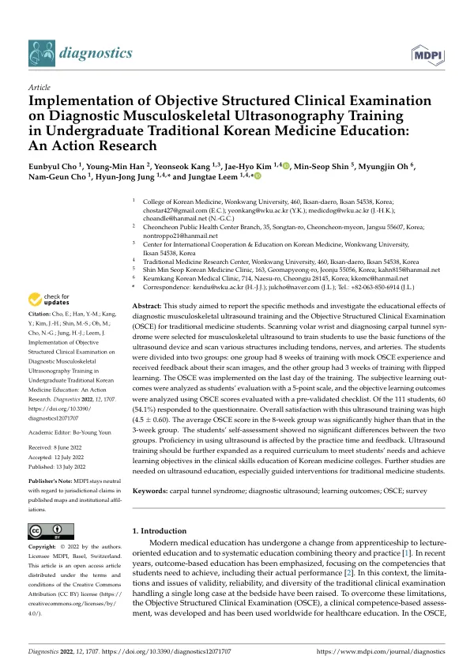

Implementation of Objective Structured Clinical Examination on Diagnostic Musculoskeletal Ultrasonography Training in Undergraduate Traditional Korean Medicine Education: An Action Research
Cho E, Han YM, Kang Y, Kim JH, Shin MS, Oh M, Cho NG, Jung HJ, Leem J
Diagnostics 12(7):1707

첫 장 · 오픈액세스First page · open access
논문 소개Summary
앞선 연구에서 만든 초음파 OSCE 체크리스트를 실제 수업에 적용하고 그 결과를 되먹여 교육을 고쳐 나가는 실행연구입니다. 대상은 한의과대학 본과생 111명이고, 손목 앞쪽 스캔과 손목터널증후군 진단이 과제였습니다. 진단기준으로는 주상골과 두상골 꼭대기를 이은 선에서 굴근지대 정점까지의 수직거리 3~4밀리미터, 터널 입구 근위부 정중신경 단면적 10제곱밀리미터 이상을 썼습니다.
원래 세 반 모두 8주 대면으로 계획했으나 코로나19가 번지면서 한 반만 8주로 남고 두 반은 3주로 줄었습니다. 줄어든 시간을 메우려고 3주 반에는 플립러닝을 넣어 초음파 원리와 기기 사용법, 스캔 방법을 미리 온라인으로 듣게 했습니다. 8주 반은 4~5명 한 조가 40분씩 두 번, 모두 80분 동안 프로브를 잡았고 두 번째에는 모의 OSCE를 치른 뒤 스캔 영상을 제출해 피드백을 받았습니다. 3주 반은 조당 60분이었고 모의 OSCE와 피드백이 없었습니다. 마지막 날 전원이 같은 OSCE를 치렀습니다.
111명 중 110명이 OSCE에 응시했고 설문에는 60명이 답했습니다. 전반적인 만족도는 4.5±0.60으로 높았고 손목터널의 해부와 생리를 더 잘 알게 되었다는 항목이 4.75±0.44로 가장 높았습니다. OSCE가 스스로 연습할 동기가 되었다는 응답 4.45±0.53, 초음파를 더 공부하겠다는 응답 4.57±0.56이었습니다.
두 군의 차이는 자기평가가 아니라 실제 점수에서 갈렸습니다. 자기평가 여섯 항목은 8주 군이 모두 높았지만 통계적으로 유의한 차이는 없었습니다. 설문 열두 항목 중에서도 제한시간 5분이 충분했느냐만 갈렸습니다(8주 3.74±0.92 대 3주 2.97±1.30, p=0.019). 그러나 OSCE 총점은 8주 군 23.23점, 3주 군 16.68점으로 뚜렷하게 달랐습니다(p<0.001, 전체 평균 19.00점, 범위 5~28점). 항목별로는 젤 도포가 1.00±0.00으로 가장 잘 지켜졌고 검사 후 손위생이 0.30±0.66으로 가장 낮았습니다.
스스로 잘한다고 느끼는 것과 실제로 잘하는 것은 다릅니다. 이 연구가 보여준 것이 그 간극입니다. 다만 두 군은 무작위로 나뉜 것이 아니라 감염병 때문에 갈렸으므로 실습 시간과 피드백이 점수 차를 만들었다고 단정할 수 없고, 응답률도 절반을 조금 넘습니다. 그럼에도 프로브를 잡은 시간과 피드백이 숙련도를 좌우한다는 방향은 이후의 반복 실습 연구로 이어졌습니다.
This is action research: the ultrasound OSCE checklist developed in an earlier study was applied in an actual course, and the results fed back into revising the teaching. The participants were 111 senior Korean medicine students, and the task was scanning the volar wrist and diagnosing carpal tunnel syndrome. Two diagnostic criteria were used — a vertical distance of 3 to 4 mm from the line joining the tops of the scaphoid and pisiform to the apex of the flexor retinaculum, and a median nerve cross-sectional area of 10 mm2 or more proximal to the tunnel inlet.
All three classes were originally to receive eight weeks of face-to-face teaching, but as COVID-19 spread only one class kept the eight weeks while the other two were cut to three. To compensate, the three-week classes received flipped learning: ultrasound principles, device operation and scanning method were delivered online in advance. In the eight-week class, groups of four to five held the probe for two sessions of 40 minutes, 80 minutes in total, and in the second session performed a mock OSCE with peer assessment before submitting scan images for instructor feedback. The three-week class had 60 minutes per group and neither mock OSCE nor image feedback. On the final day everyone sat the same OSCE.
Of the 111 students, 110 sat the OSCE and 60 answered the questionnaire. Overall satisfaction was high at 4.5 ± 0.60, and the item on improved understanding of carpal tunnel anatomy and physiology scored highest at 4.75 ± 0.44. The OSCE motivated independent practice (4.45 ± 0.53), and students intended to study ultrasound further (4.57 ± 0.56). Asked which region they wanted to learn next, 29 named the shoulder, followed by the abdomen (14), knee (13) and ankle (6).
The two groups differed not in self-assessment but in actual scores. All six self-assessment items were higher in the eight-week group, none significantly. Of twelve questionnaire items, only whether the five-minute limit was sufficient separated them (8-week 3.74 ± 0.92 vs 3-week 2.97 ± 1.30, p = 0.019). Total OSCE scores, however, were clearly different: 23.23 in the eight-week group against 16.68 in the three-week group (p < 0.001; overall mean 19.00, range 5 to 28). By item, gel application was performed best (1.00 ± 0.00) and hand hygiene after the examination worst (0.30 ± 0.66).
Feeling competent and being competent are not the same thing, and that gap is what this study exposes. The two groups were not randomised, however — an epidemic divided them — so time on probe and feedback cannot be declared the cause of the score difference, and the response rate was only just above half. Even so, the direction it points, that hands-on time and feedback govern proficiency, carried into the repeated-training study that followed.
인용Cite
Cho E, Han YM, Kang Y, Kim JH, Shin MS, Oh M, Cho NG, Jung HJ, Leem J. Implementation of Objective Structured Clinical Examination on Diagnostic Musculoskeletal Ultrasonography Training in Undergraduate Traditional Korean Medicine Education: An Action Research. Diagnostics. 2022;12(7):1707. doi:10.3390/diagnostics12071707